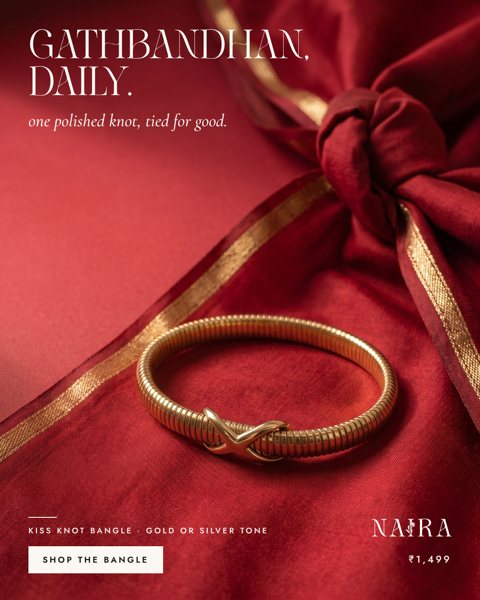

9.3
E2_knot_a1Feed 4:5Gathbandhan, daily.
one polished knot, tied for good.
Kiss Knot Bangle · gold or silver tone · ₹1,499
Rounds: 9.3 → 9.3 · Now, wedding season
Open notes
- [layout, minor] Where the zari crosses 'HA', the cream letters drop to about 2:1 contrast. They are readable, but this is the weakest spot on the line.
- [photo, minor] At 2x the knotted cloth top right is a little soft and plasticky.